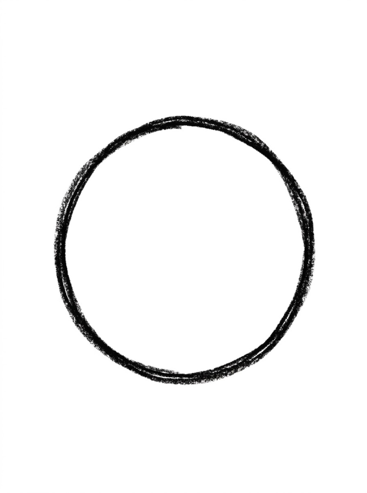
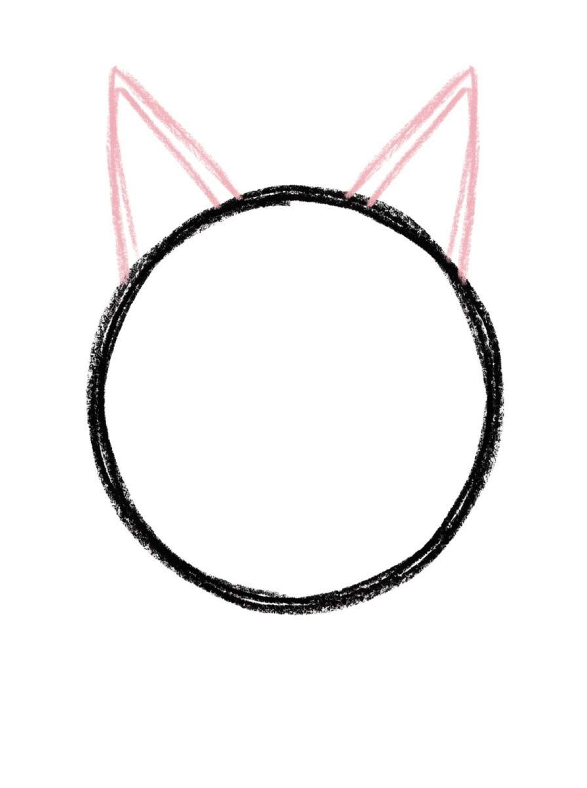
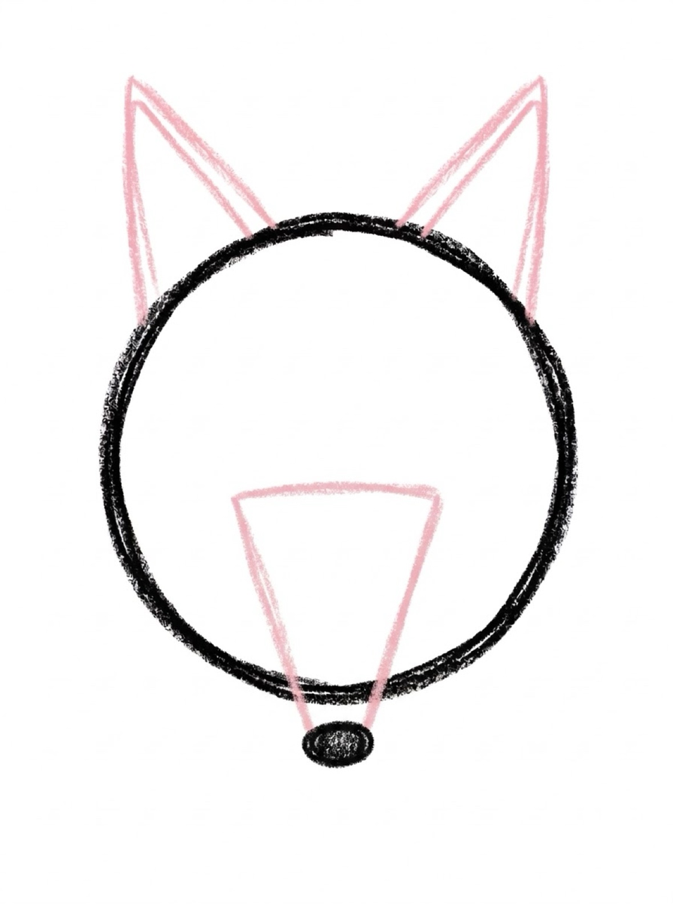
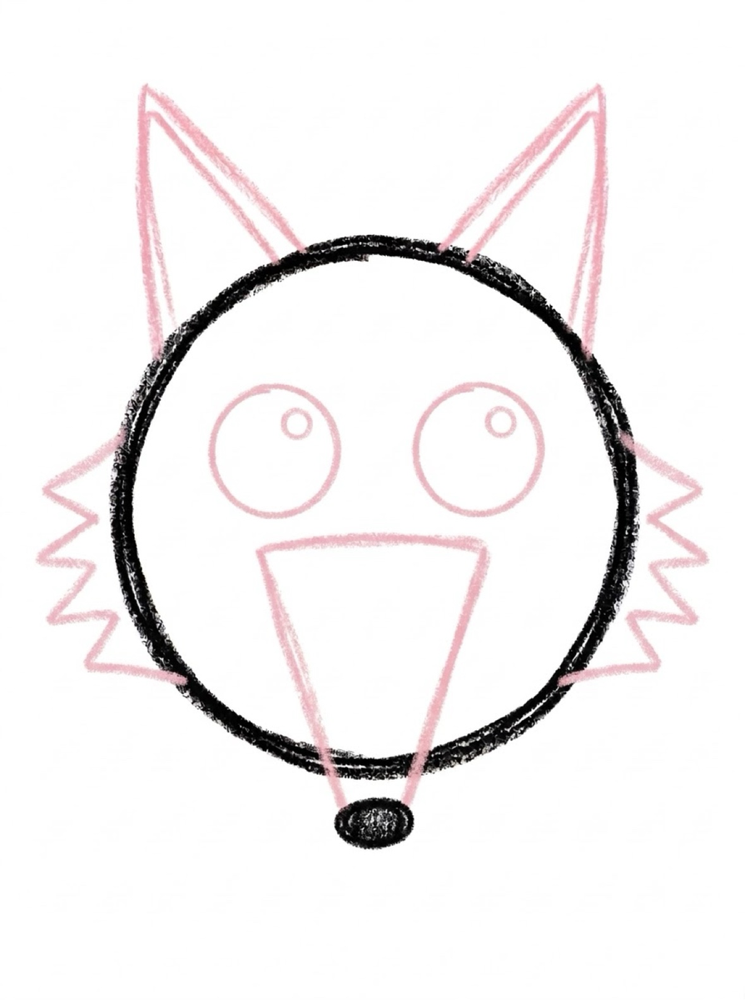
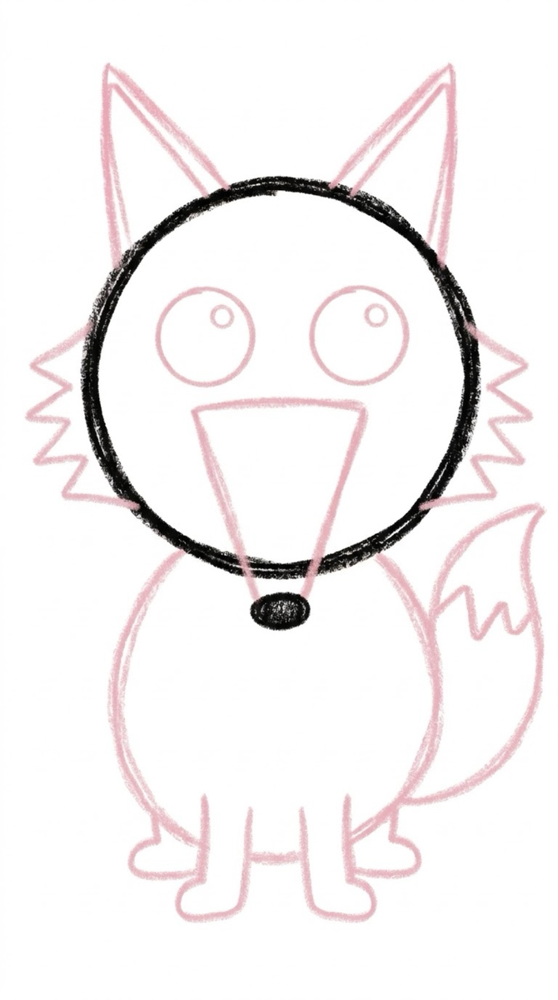

How to Draw a Fox 6 Easy Steps for Kids
Quick Answer
This free step-by-step tutorial shows kids how to draw a fox in six easy steps: a triangle head, pointy ears, a snout with nose, clever eyes, a body with a big tail, and color. Download the printable PDF, grab crayons, and follow along together. Made for ages 5 and up — no signup needed, just print and draw.
At a Glance
- Subject: How to draw a fox
- Ages: 5+
- Steps: 6 steps
- Time: ~15 min
- Difficulty: Easy-Medium
- Supplies: Paper, crayons
Foxes are geometry in disguise — triangles everywhere. Pointy ears, pointy snout, pointy tail tip. Once kids see the triangle pattern, the fox practically draws itself, and the orange-and-white coloring is the most satisfying part.
✏️ How to Draw a Fox: Step by Step
One step per box — draw each new part in a different color so kids can see exactly what changed.
Step 1: Step 1: Round Head

Draw a big circle for the fox's head.
Step 2: Step 2: Pointy Ears

Draw two tall triangles on top of the circle for the fox's famous pointy ears.
Step 3: Step 3: Snout and Nose

Draw a pointed triangle shape at the bottom of the circle for the snout, with a black oval nose at its tip.
Step 4: Step 4: Eyes and Cheek Fur

Add two big round eyes, then draw zigzag fur tufts on each cheek — those fluffy cheeks are what make it a fox!
Step 5: Step 5: Body, Legs and Big Tail

Draw an oval body below the head, two front legs and two back legs, and a HUGE fluffy tail curving beside the body with a white tip.
Step 6: Step 6: Color It In

Color it fox-orange with a white chest, white tail tip, and black ears and legs!
📊 Fox Drawing by Age
Every age can join in — just adjust the job.
| Age | What they can do | Tip |
|---|---|---|
| 3–4 | Trace the triangle head and color it orange | Triangles are hard at this age — draw them together hand-over-hand |
| 4–5 | Draw the head, ears, and snout with help | The white tail tip is the fun part — leave it uncolored on purpose |
| 6+ | Draw the whole fox solo | Challenge: draw the fox peeking out from behind a tree |
🖨️ Download Your Free Fox Drawing Printable
The printable lays out all 6 steps one per box, big enough for little hands — kids draw right alongside each step.
⬇️ Open Free Printable 🖨️ Print🎁 Free printable for ages 3+
🦊 Forest Sneak-Up
Draw your fox small at the edge of a big forest scene — triangle pine trees, a moon, fallen leaves. Foxes are sneaky animals, so a fox peeking into the scene tells a story. Ask your kid: what is the fox sneaking up on?
What You'll Need to Draw a Fox
Orange for the body, white for the chest and tail tip, black for the ears and nose. The color blocking — orange on top, white underneath — is what makes a fox look like a fox, so don't skip it. A black crayon with a decent point helps for the triangle ears and sharp nose. White paper keeps the orange vivid.
What They're Learning
Foxes combine triangles (ears, snout) with curves (bushy tail, body) — it's a step up in shape complexity from the simpler animals. The white chest patch teaches planning: you have to leave that space uncolored while filling in around it, which is early negative-space thinking. The tail's zigzag fur edge is also good texture practice.
Make It Yours
Try a sleeping fox curled up with the big tail wrapped around like a blanket — adorable and easier than the standing pose. A fox in snow (white background, orange popping) makes a beautiful winter picture. Kids can add a forest background with pine trees, or draw a fox family with one big and two small kits playing.
❓ Fox Drawing FAQs
What is the easiest way for a kid to draw a fox?
Draw a rounded triangle pointing down for the head and add two tall triangle ears. Give it a triangle snout with an oval nose, clever almond eyes, then an oval body and a huge fluffy tail with a white tip. Triangles are the whole animal.
What age can kids start learning to draw a fox?
Most kids are ready around age 5, when triangles start to click. Younger kids can trace the triangle head and focus on the fun part — the orange coloring.
What supplies do we need to draw a fox?
Paper and crayons or markers — orange, white, and black for the classic fox markings. The free printable PDF lays out all six steps one per box so kids can draw right alongside each step.
Is the fox drawing printable really free?
Yes — every printable on MomYouNeedThis is 100% free to download and print. No signup, no payment, just tap the download button.
How do I print the fox drawing tutorial?
Open the PDF and print at 100% scale (not 'fit to page') so the drawing boxes stay big enough for little hands. The printable is designed to stay large — never shrunk to force a fit.
📚 Keep Exploring
More free drawing tutorials and coloring pages made for little hands and busy parents.
✏️ All 22 Drawing Tutorials